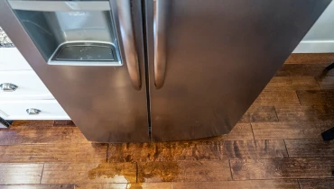

A fridge is designed to keep water inside its pipes and drain pans, so a puddle on the floor is a sign something has blocked, cracked or worn out. The location of the water tells you a great deal about the cause.
The most common cause is a blocked or frozen defrost drain, which sends melt-water into the fridge compartment and onto the floor. Other causes include a cracked drain pan, a faulty water inlet valve or supply line and worn door seals. Unplug the fridge, find where the water appears and work through the checks below.
Where is the water coming from?
Frost-free fridges melt frost off the evaporator regularly. That water should run down a small drain channel to a pan near the compressor, where it evaporates. When something interrupts that path, you get a leak. Start by matching what you see to the table below:
| Where you see water | Likely cause | First step |
|---|---|---|
| Pooling at the bottom of the fridge compartment or under the crisper drawers | Blocked or frozen defrost drain | Clear the drain hole (see below) |
| Puddle under or behind the fridge | Cracked or overflowing drain pan, or a blocked drain | Unplug and call a technician |
| Water at the back or base of a fridge with a water dispenser or ice maker | Faulty inlet valve or loose supply line | Turn off the water supply |
| Droplets on shelves, or water near the door | Worn door seal or door not closing | Check seal and level |
| Ice forming at the back wall, then melting into a puddle | Defrost heater, sensor or timer fault | Call a technician |
Blocked or frozen defrost drain
Food particles, grease and ice can clog the drain channel. Water then overflows into the fridge and out onto the floor. It is the single most common cause of fridge leaks.
Cracked or misaligned drain pan
The pan under the fridge collects defrost water. If it is cracked or has slipped out of position, water ends up on the floor, often after the compressor has been running for a while.
Water inlet valve and supply line
Fridges with a water dispenser or ice maker have a pipe and valve. Loose connectors, a worn pipe or a failing valve can all leak, and the water may only show up behind the fridge.
Door seals and condensation
If the gasket is damaged or the fridge isn't level, warm moist air enters and condenses inside. In humid weather this can look like a leak.
Safe checks you can do at home
- Make it safe. Unplug the fridge, or switch it off at the wall, and mop up the water. If the supply line to a water dispenser is leaking, turn off the water at the isolating valve.
- Find the source. Dry the area and the shelves, then watch where fresh water appears. Take a photo of the location for your technician.
- Clear the defrost drain. The drain is a small hole at the bottom of the back wall of the fridge compartment (check your manual). Flush it gently with warm, not boiling, water using a syringe or turkey baster. Never push sharp objects into the hole.
- Inspect the door seals. Wipe the gaskets clean and look for tears or hardened sections. Close the door on a piece of paper: if it slides out easily, the seal isn't gripping.
- Check that the fridge is level. It should sit level from side to side, with the front very slightly raised so the doors swing closed on their own.
- Check water line connections. If you have a water dispenser or ice maker, check the connector at the back for drips.
- Restart and watch. Plug the fridge back in and check again after a few hours. If the leak returns, the problem is probably beyond a simple blockage.

When to call a technician
If water has reached the plug, socket or a wall outlet, do not touch them with wet hands. Switch off the power at your distribution board first, then unplug the fridge.
Arrange a repair visit if:
- The leak returns after you have cleared the drain.
- Water is coming from behind or under the fridge and you can't see the source.
- Ice keeps forming at the back of the freezer or fridge compartment.
- The leak comes from a water dispenser, ice maker or supply line.
- The fridge has stopped cooling as well (see our fridge not cooling guide).
Our technician will clear and test the drain, inspect the pan and water valve and replace worn gaskets on-site. Most leaks are resolved in a single visit.
What does it cost to fix a leaking fridge?
| Fault | Typical on-site range | Typical time |
|---|---|---|
| Water leaking underneath | R450 – R850 | 30 – 45 mins |
| Not cooling / freezing issue | R650 – R1,200 | 45 – 60 mins |
Door seal, inlet valve and drain pan replacements are priced individually, and your fixed quote is confirmed after diagnosis. If you go ahead with the repair, the initial diagnostic fee is waived.